Constructing Time Series Networks
Mohammed Saqr
University of Eastern FinlandSonsoles López-Pernas
University of Eastern FinlandManuel J. Gómez
University of MurciaSource:
vignettes/pleasure-all-functions.Rmd
pleasure-all-functions.RmdIntroduction
Time series analysis traditionally represents temporal data as observations indexed by time, with attention directed to quantities such as level, variation, dependence, and change. A network representation offers a complementary view: it replaces, or augments, the explicit time index with a relational structure in which nodes stand for observations, temporal states, or local windows, and edges encode a defined relationship between them. That relationship may be geometric visibility, numerical similarity, a state transition, a co-occurrence, or a weighted dependence. A time series therefore does not have a single canonical network. The network that results is determined jointly by the chosen representation and by the structural question that representation is designed to answer.
The tsn package provides a set of these
representations while keeping the modelling choices explicit at every
step. discretize() maps continuous observations onto a
finite set of ordered states and so yields a symbolic version of the
series. trend() characterizes local direction and separates
short-range increase, decrease, stability, and turbulence.
vg() constructs a visibility graph, in which observations
are joined when the geometry of the series makes them mutually visible.
tsn() is the general distance-network constructor over
complete series, local windows, or individual observations; this
vignette applies it to overlapping windows joined by their
similarity.
Once a series has been reduced to a sequence of states, its dynamics
can be examined through transition network analysis.
ts_tna() builds a transition network whose edges carry
conditional transition probabilities. ts_ftna() builds the
corresponding frequency network, ts_cna() a co-occurrence
network, and ts_atna() an attention-weighted transition
network. These four constructions summarize different properties of the
same symbolic sequence and are complementary rather than
interchangeable. Finally, series_networks() extracts and
indexes the network model attached to each source series, retaining the
model type, the shared state alphabet, and the provenance needed to
trace a network back to its data.
Every representation in this vignette is developed on one fixed
segment of one measured variable, so that the constructions can be
compared without any change in the underlying data. Network figures are
produced by the package’s plot() methods through
cograph, and the four transition-network constructors
require the Nestimate package; both are optional and
used only where noted.
| Scientific question | Function | Result | What it captures |
|---|---|---|---|
| How can a continuous series be represented as a sequence of discrete states? | discretize() |
Tidy state table | Maps continuous observations onto a finite, ordered state alphabet, making recurring levels and ranges explicit. |
| How does the series change locally over time? | trend() |
Tidy trend table | Labels each observation by its local direction: increase, decrease, stability, or turbulence. |
| Which observations are connected by geometric visibility? | vg() |
Visibility network | Connects observations that can “see” each other over the intervening values. |
| Which time windows are similar in value or shape? | tsn() |
Distance network | Relates local windows by their proximity, exposing repeated or structurally similar segments. |
| How likely is one state to be followed by another? | ts_tna() |
Transition network (TNA) | Weights directed edges by the conditional probability of each successive transition. |
| How often does the series move from one state to another? | ts_ftna() |
Frequency network (FTNA) | Weights directed edges by the observed count of each successive transition. |
| Which states co-occur within the sequence? | ts_cna() |
Co-occurrence network (CNA) | Uses undirected edges to represent state co-occurrence, ignoring direction. |
| Which transitions receive the greatest attention weight? | ts_atna() |
Attention-weighted network (ATNA) | Weights directed edges by model-assigned attention rather than raw counts. |
| How is each network associated with its source series? | series_networks() |
Indexed model collection | Organizes extracted models by source series while preserving their correspondence and provenance. |
In short, discretize() defines the
states, trend() describes local
direction, vg() describes geometric
visibility, and tsn() describes similarity
between temporal windows. The ts_tna() family then
builds transition networks from the state sequence, differing only in
the quantity assigned to their edges, and series_networks()
indexes the results by source series.
Data
The motivation data set bundled with the package is an
example of experience-sampling, or intensive longitudinal, data: the
same respondent was prompted several times a day and asked to report, in
the moment, how they felt about the activity they were engaged in. Each
of its 4,871 rows is one such momentary report, collected between
September 2018 and July 2021, and no values are missing. The thirteen
columns fall into a few natural groups. Three record motivation
(autonomy, competence,
relatedness); three record appraisal of the current
activity (pleasure, interest,
importance); several describe the situation and its
emotional framing, together with a categorical context label whose
values are Home, Work, Personal, and Other; and one records overall
mood. Two further columns place each report in time, giving
the calendar date and the position of the report within that day’s
sequence of prompts.
This vignette follows a single one of these signals, the
pleasure rating, which captures how pleasant the respondent
found the current activity at the moment of the prompt. To keep every
network small enough to read in full, the analysis uses only the first
60 reports, which each verb selects by name from the data frame. Passing
the data frame rather than a bare vector preserves the recorded order of
the observations, and that order is what every method below treats as
the flow of time.
These 60 reports were collected over 21 days, from 29 September to 19 October 2018. The pleasure ratings occupy the observed range 6 to 44, with a median of 30, a mean of 26.8, and a standard deviation of about 10, so they spread across a wide band rather than clustering near a single value. The segment carries no systematic trend: the first twenty reports average 27.5 and the last twenty average 27.0, essentially unchanged. The representations that follow should therefore be read as descriptions of short-run fluctuation around a roughly constant level, not of a rising or falling series. The distinction matters for interpretation, because several of the constructions below, in particular the visibility graph and the trend labels, respond to the local rises and falls of the series rather than to its overall direction.
Transition Network Analysis
Transition Network Analysis starts by turning the observed series
into a finite sequence of states. The aim is not to discard the measured
values but to obtain a symbolic representation in which dynamics can be
studied as movement among a fixed set of states.
discretize() performs this step, assigning each observation
to one state and returning one tidy row per observation.
Here the default quantile discretization splits the values into three
empirical groups, labelled Low, Middle, and
High. The resulting sequence keeps the temporal order of
the observations and replaces their continuous values with ordered
categorical states.
states <- discretize(
data = pleasure,
series = "pleasure",
labels = c("Low", "Middle", "High")
)
states
#> <tsn_states> quantile discretization (transform: none): 60 observations, 3 states
#> id time value state probability
#> pleasure 1 32 Middle 1
#> pleasure 2 32 Middle 1
#> pleasure 3 32 Middle 1
#> pleasure 4 26 Middle 1
#> pleasure 5 16 Low 1
#> pleasure 6 6 Low 1
#> pleasure 7 30 Middle 1
#> pleasure 8 6 Low 1
#> pleasure 9 44 High 1
#> pleasure 10 42 High 1
summary(states)
#> state count proportion mean_value
#> 1 Low 20 0.3333333 14.75000
#> 2 Middle 23 0.3833333 29.13043
#> 3 High 17 0.2833333 37.82353Each row records the source identifier, the time index, the observed
value, the assigned state, and an assignment probability. The
probability column reports the confidence of the
assignment: it equals 1 for a hard partition such as the quantile rule
used here, and takes values in the unit interval for probabilistic
discretizers such as gaussian or kde. Because
the state labels follow the ordering of the values, Low,
Middle, and High retain a strict ordinal
meaning. Quantile boundaries do not, in general, divide the observations
into exactly equal groups when values are tied; in this segment the
counts are 20 Low, 23 Middle, and 17
High.
The state sequence is the intermediate object from which every transition network below is built. Its three states become the network nodes, and each adjacent pair of observations defines one possible state-to-state transition. The four constructors that follow all read this same sequence; what differs between them is the quantity placed on the edges.
plot(states, type = "ribbon")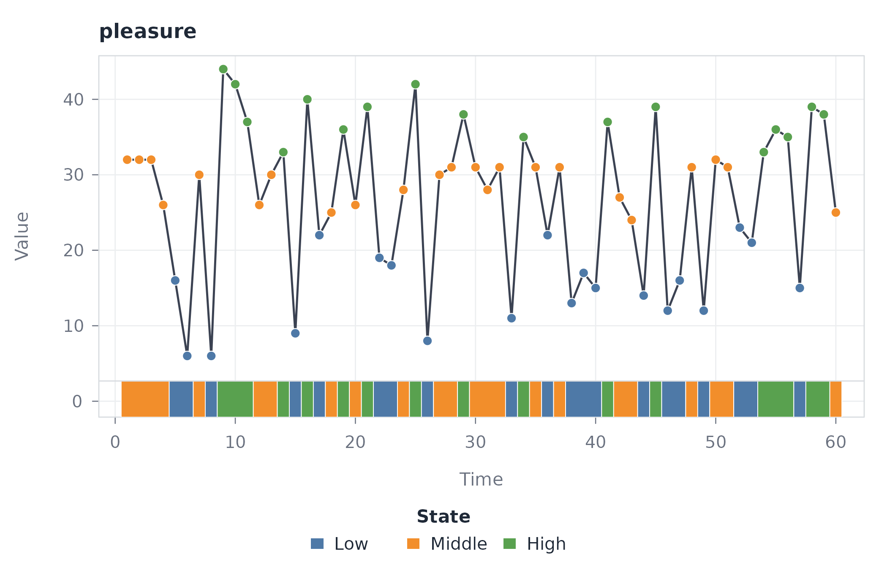
The ribbon view places the discrete states beneath the measured series, so the correspondence between an observation and its assigned state stays visible without a full-panel overlay obscuring the values themselves.
Transition probabilities with ts_tna()
ts_tna() builds a directed network in which an edge runs
from the current state to the next, weighted by the conditional
probability of that transition. Each row of the weight matrix is a
probability distribution over the possible next states, so the outgoing
weights of a state sum to one.
probabilities <- ts_tna(states)
probabilities
#> Transition Network (relative probabilities) [directed]
#> Weights: [0.227, 0.409] | mean: 0.333
#>
#> Weight matrix:
#> Low Middle High
#> Low 0.300 0.350 0.350
#> Middle 0.364 0.409 0.227
#> High 0.353 0.353 0.294
#>
#> Initial probabilities:
#> Middle 1.000 ████████████████████████████████████████
#> Low 0.000
#> High 0.000The diagonal entries measure persistence, the probability that the
next observation stays in the current state: 0.300 for Low,
0.409 for Middle, and 0.294 for High.
Comparing these with the marginal state proportions (0.333, 0.383, and
0.283) separates persistence from mere prevalence. Middle
and High both persist above their marginal share, so a
Middle or High observation is more likely to
be followed by its own state than random ordering would imply.
Low sits marginally below its share (0.300 against 0.333),
indicating no such tendency to persist over this short segment.
plot(probabilities)
Row normalization is what makes this representation interpretable. Each row is the conditional distribution of the next state given the current one, so the outgoing patterns of different states remain comparable even though the states have different marginal frequencies. A sequence of 60 observations is thereby reduced to three nodes and the directed relationships among them, with the temporal order retained as the basis for the estimates.
Transition frequencies with ts_ftna()
ts_ftna() weights each directed edge by the observed
count of the corresponding transition, without the row normalization
applied by ts_tna(). The network therefore preserves the
absolute number of times each transition occurred.
counts <- ts_ftna(states)
counts
#> Transition Network (frequency counts) [directed]
#> Weights: [5.000, 9.000] | mean: 6.556
#>
#> Weight matrix:
#> Low Middle High
#> Low 6 7 7
#> Middle 8 9 5
#> High 6 6 5
#>
#> Initial probabilities:
#> Middle 1.000 ████████████████████████████████████████
#> Low 0.000
#> High 0.000The 60 observations form 59 adjacent pairs, so the count matrix sums
to 59. The most frequent single transition is Middle to
Middle, which occurs 9 times and is the only
self-transition that is also the largest count in its row. The
Low and High rows are more evenly spread: a
Low observation is followed equally often by
Middle or High (7 each) rather than by another
Low (6), so persistence, although present, does not
dominate the raw counts here. The frequency and probability networks
describe the same transitions but answer different questions: the
frequency network reports how often each transition
occurred, whereas the probability network reports how
likely it is given the current state.
plot(counts)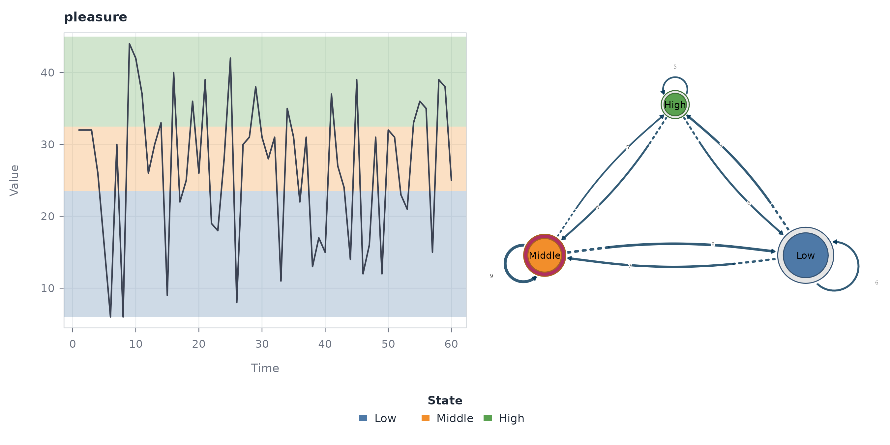
State co-occurrence with ts_cna()
ts_cna() builds an undirected, symmetric network whose
edges measure how strongly two states occur together, without regard to
the order in which they appear. It answers a different question from the
directed transition networks.
cooccurrence <- ts_cna(states)
cooccurrence
#> Co-occurrence Network [undirected]
#> Weights: [136.000, 460.000] | mean: 295.000
#>
#> Weight matrix:
#> Low Middle High
#> Low 190 460 340
#> Middle 460 253 391
#> High 340 391 136For a single sequence, these co-occurrence counts follow directly
from the marginal state frequencies. An off-diagonal entry is the
product of the two state counts, so the
Low-Middle weight is
20 * 23 = 460; a diagonal entry counts the unordered pairs
within a state, so the Low-Low weight is
20 * 19 / 2 = 190. The network therefore reflects the
composition of the state alphabet rather than the temporal direction of
transitions. A strong edge means the two states are both common, not
that one tends to follow the other.
plot(cooccurrence)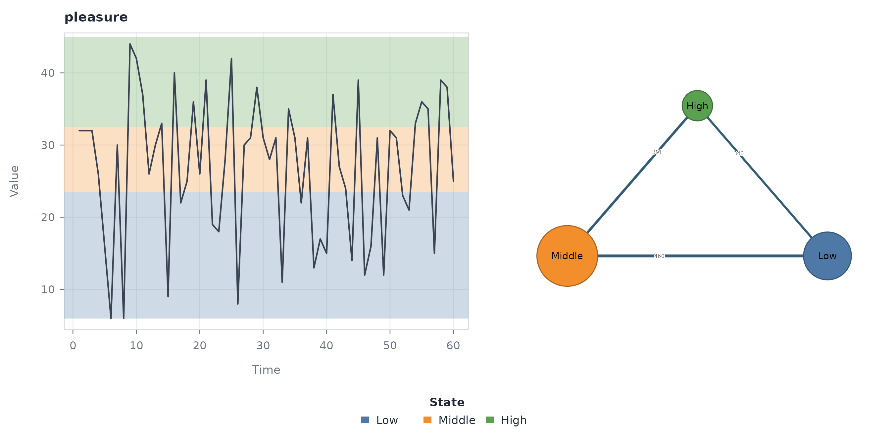
The symmetric drawing makes the distinction explicit: an edge carries no source-to-target direction, in contrast to the transition networks above.
Attention-weighted transitions with ts_atna()
ts_atna() assigns each transition an attention weight
rather than a count or a probability. The edge weights are accumulated
attention values and are not on the scale of either the frequency or the
probability network.
attention <- ts_atna(states)
attention
#> Attention Network (decay-weighted transitions) [directed]
#> Weights: [2.875, 5.015] | mean: 3.778
#>
#> Weight matrix:
#> Low Middle High
#> Low 3.524 4.055 4.031
#> Middle 5.015 4.801 2.988
#> High 3.085 3.625 2.875
#>
#> Initial probabilities:
#> Middle 1.000 ████████████████████████████████████████
#> Low 0.000
#> High 0.000The weights range from 2.875 to 5.015. Unlike the frequency and
probability networks, the largest weights here are off-diagonal: the
strongest attention-weighted transition is Middle to
Low (5.015), and the persistence diagonals are not the
dominant entries in their rows. The attention mechanism consequently
redistributes emphasis away from the self-transitions that the raw
counts favour, and the weights should be read on the model’s own
attention scale rather than compared directly with counts or
probabilities.
plot(attention)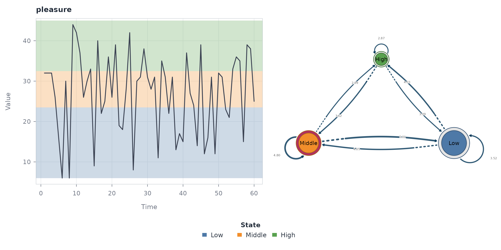
Indexing the model with series_networks()
series_networks() returns an indexed collection of the
network models attached to the source series. It is designed for
analyses that extract networks across many series at once, where the
index preserves the link between each series and its model. With a
single input series it returns one entry, corresponding to
pleasure.
individual <- series_networks(probabilities)
individual
#> series type observations states edges
#> pleasure tna 60 3 9The index records the source series, the network type, and the number of observations, states, and edges. For the transition-probability network the three states generate nine directed relationships, the six between distinct states plus the three self-transitions.
plot(individual)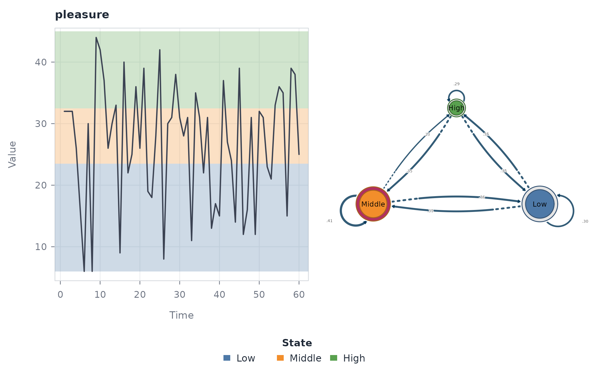
The collection thus provides a higher-level handle on the extracted networks while keeping their provenance. Given several source series, the same structure organizes and compares their models systematically.
Local direction with trend()
trend() estimates a rolling local slope and labels each
observation as Ascending, Descending,
Flat, Turbulent, Missing Data, or
Initial. The window is adaptive and defaults to one tenth
of the series length, which is 6 observations here, and the default
Theil-Sen slope limits the influence of isolated extreme ratings.
directions <- trend(
data = pleasure,
series = "pleasure"
)
directions
#> <tsn_trend> slope (robust), window 6: 60 observations across 1 series
#> id time value metric state
#> pleasure 1 32 NA Initial
#> pleasure 2 32 NA Initial
#> pleasure 3 32 -5.333333 Descending
#> pleasure 4 26 -5.333333 Descending
#> pleasure 5 16 -5.200000 Descending
#> pleasure 6 6 1.333333 Ascending
#> pleasure 7 30 7.000000 Turbulent
#> pleasure 8 6 6.200000 Ascending
#> pleasure 9 44 -0.800000 Descending
#> pleasure 10 42 -3.500000 Turbulent
summary(directions)
#> state count proportion
#> 1 Ascending 21 0.35000000
#> 2 Descending 17 0.28333333
#> 3 Flat 4 0.06666667
#> 4 Turbulent 13 0.21666667
#> 5 Initial 5 0.08333333Ascending is the most common label with 21 observations,
followed by Descending with 17, Turbulent with
13, Initial with 5, and Flat with 4. The near
balance between ascending and descending positions is what a segment
without drift should produce: local direction keeps reversing rather
than accumulating in one direction. Initial marks the
leading positions that lack a complete centered window, and
Missing Data would mark absent values, of which this
segment has none.
plot(directions)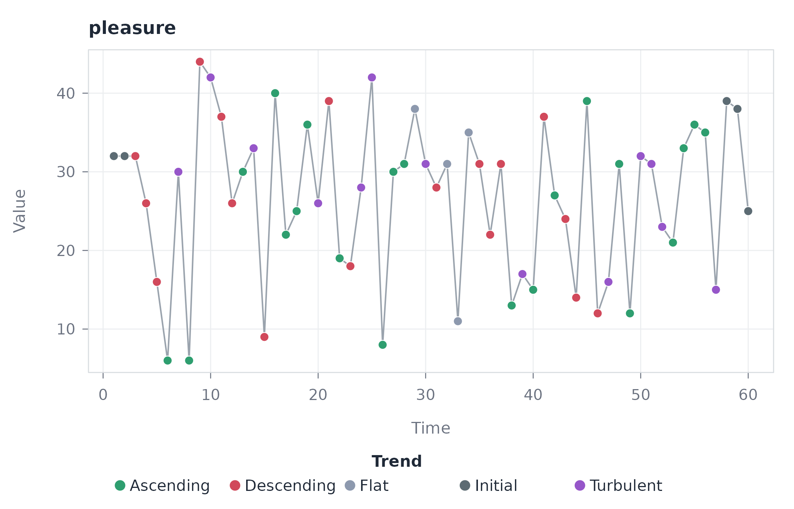
The default plot colours each observation by its trend label.
plot(directions, type = "panels")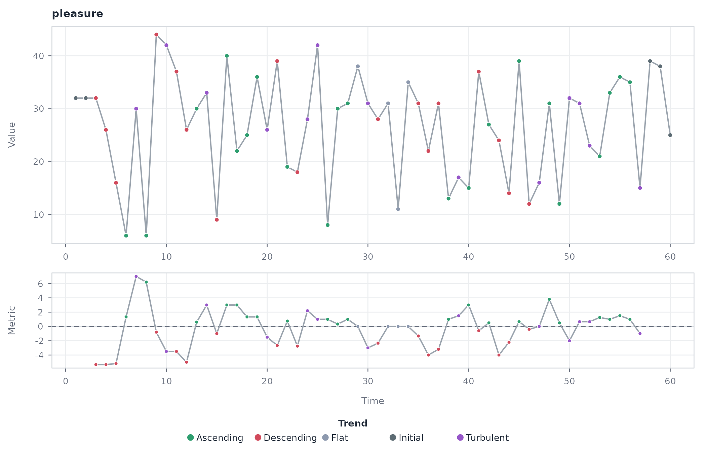
The panel view places the rolling metric below the measurements, so the points at which the metric crosses the flat band can be checked against the assigned direction.
Visibility with vg()
vg() treats each observation as a node. Under natural
visibility, two points are joined when the straight line between their
values stays above every intervening point. Under horizontal visibility,
they are joined only when every intervening value lies below both
endpoints, a strictly stronger condition.
natural <- vg(
data = pleasure,
series = "pleasure"
)
summary(natural)
#> method unit nodes dyads edges density minimum_weight maximum_weight
#> 1 visibility time 60 143 143 0.08079096 1 1
#> directed
#> 1 FALSEThe natural visibility graph has 60 nodes and 143 edges. At this length the edges remain distinguishable, so it can be drawn directly. Node size encodes degree, and the peaks accumulate the most connections because they stay visible over the smaller values around them.
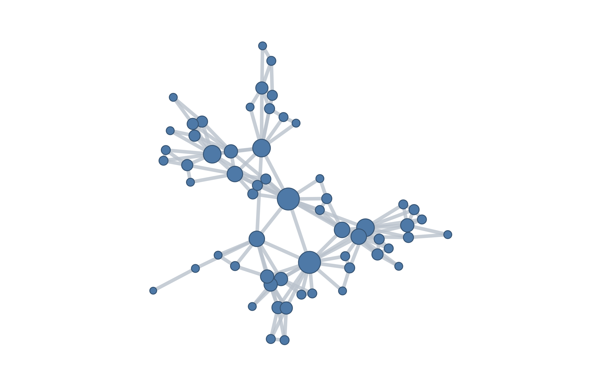
The horizontal rule keeps the same 60 nodes but fewer edges.
horizontal <- vg(
data = pleasure,
type = "horizontal",
series = "pleasure"
)
summary(horizontal)
#> method unit nodes dyads edges density minimum_weight maximum_weight
#> 1 visibility time 60 107 107 0.06045198 1 1
#> directed
#> 1 FALSEIt retains 107 of the 143 connections, removing the 36 that a natural line of sight can clear but a horizontal one cannot. The result keeps the temporal chain of consecutive observations while dropping the longer sightlines that only the natural view permits. In both graphs the edge weights are binary, since visibility either holds or it does not.
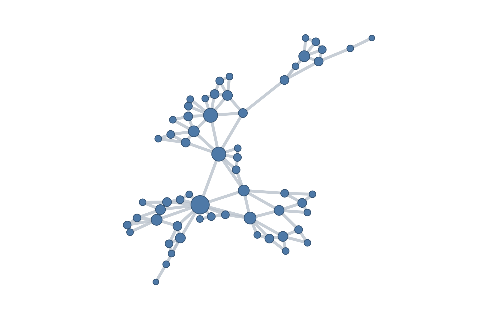
Every network also retains the series it was built from, which the source-series view recovers.
plot(horizontal, type = "series")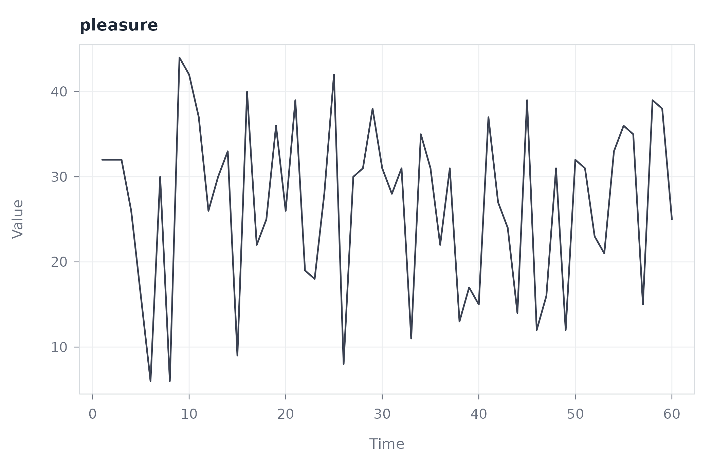
This view makes the short-run fluctuation that the visibility rule reads directly apparent.
Window similarity with tsn()
tsn() is the general distance-network constructor. With
method = "distance" a single measured series defaults to
sliding-window nodes. The window width defaults to one tenth of the
series length, which is 6 here, and a step of 2 yields 28 overlapping
windows.
windows <- tsn(
data = pleasure,
method = "distance",
series = "pleasure",
step = 2
)
summary(windows)
#> method unit nodes dyads edges density minimum_weight maximum_weight
#> 1 distance window 28 378 378 1 0.01682183 0.1118912
#> directed
#> 1 FALSEThe default full connection rule evaluates and keeps all 378 window
pairs. Each edge weight is 1 / (1 + distance), so larger
weights mark more similar windows.
sparse <- tsn(
data = pleasure,
method = "distance",
series = "pleasure",
step = 2,
connect = "nearest",
neighbors = 2
)
summary(sparse)
#> method unit nodes dyads edges density minimum_weight maximum_weight
#> 1 distance window 28 378 40 0.1058201 0.03137678 0.1118912
#> directed
#> 1 FALSENearest-neighbour sparsification keeps 40 edges and lowers the density from 1 to 0.106, retaining the strongest local similarities instead of drawing every pair.
plot(sparse)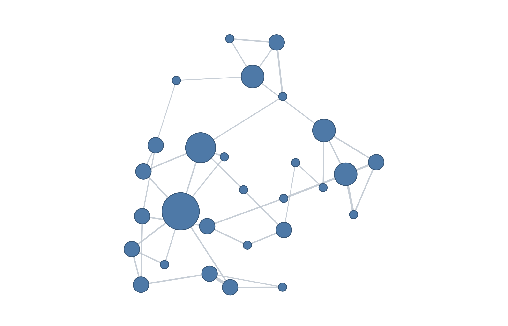
No retained edge joins immediately adjacent windows. The closest retained pairs are two windows apart and the most distant are twenty-one windows apart, which shows that overlap in time does not by itself determine similarity in value: windows far apart in the sequence can still be each other’s nearest neighbours.
The distance measure is itself a modelling choice. Dynamic time
warping aligns two windows by their shape, tolerating the shift or
stretch in time that Euclidean distance penalizes. Repeating the
sparsification under distance = "dtw" redraws the neighbour
graph on the same 28 windows.
warped <- tsn(
data = pleasure,
method = "distance",
series = "pleasure",
step = 2,
distance = "dtw",
connect = "nearest",
neighbors = 2
)
summary(warped)
#> method unit nodes dyads edges density minimum_weight maximum_weight
#> 1 distance window 28 378 39 0.1031746 0.01851852 0.05555556
#> directed
#> 1 FALSEThe warped network keeps 39 edges, almost as many as the Euclidean version’s 40, yet it connects largely different pairs of windows. Whether two windows count as similar therefore depends as much on the chosen distance as on the series itself.
plot(warped)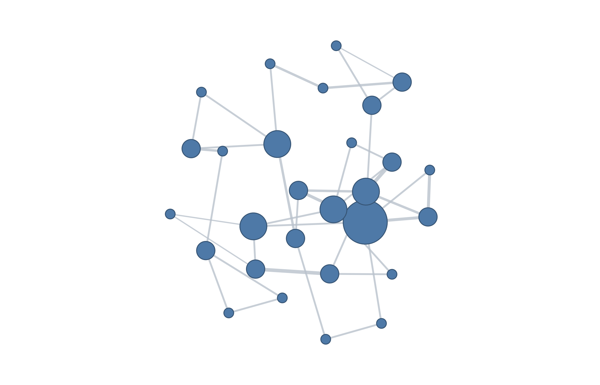